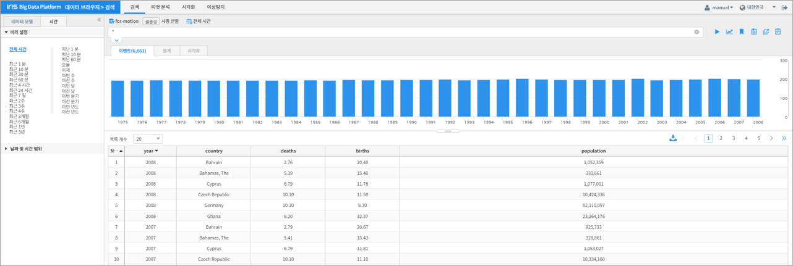
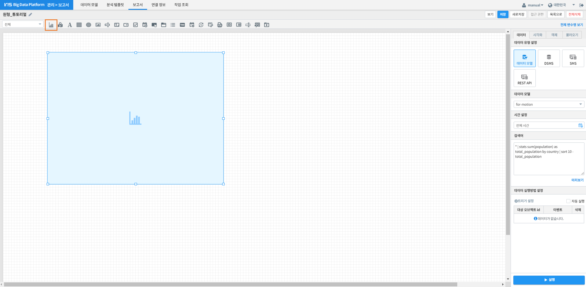
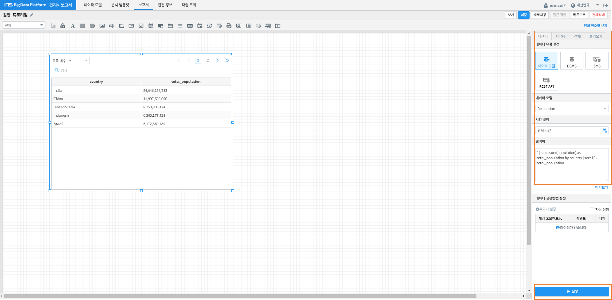
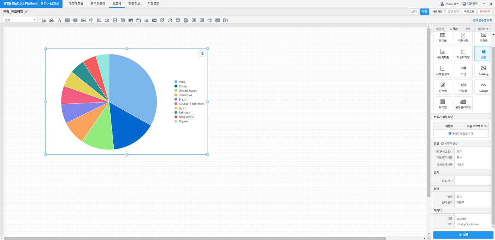

원형¶
원형차트 개요¶
[원형] 컴포넌트는 데이터의 각 범주의 합계 또는 평균 등 전체에 대한 각 범주 값의 상대적 비율을 원형 그래프 형태로 표시하고자 할 때 사용하는 컴포넌트입니다.
데이터의 단일 값이 아닌 해당 범주 별 비율이 집계되어야 하며, 데이터 범주의 전체적인 비율을 쉽게 파악할 수 있습니다.
사용 데이터¶
본 튜토리얼에서는 나라별 인구 수 데이터를 사용하였습니다.
원형 차트 생성¶
차트 영역 생성¶
데이터브라우저 > 관리 > 보고서 항목에서 새 보고서를 생성할 수 있습니다.
좌측 상단의 [차트]를 클릭하여 보고서 페이지의 원하는 위치에 차트 영역을 생성합니다.
데이터 설정¶
우측 [데이터]기능에서 원형 차트를 그릴 데이터 모델을 선택합니다.
원형차트로 생성하기 적합한 command를 입력한 후 실행합니다.
본 튜토리얼에서는 나라 별 인구수의 합을 상위 10개국 기준으로 정렬한 결과를 원형 차트로 표현합니다.
데이터 Command: * | stats sum(population) as total_population by country | sort 10 -total_population
우측 하단의 [실행]을 클릭하면 시각화 default옵션인 테이블 형태로 command 내용이 출력됩니다.
{kind=link}
시각화 옵션 설명¶
옵션 |
설명 |
|---|---|
원형 차트에 값 표시 여부, 다운로드, 상세보기 버튼 표시 여부를 설정 다운로드 버튼과 상세보기 버튼 표시를 설정 |
|
조각의 최소 크기를 설정 |
|
범례의 표시 여부와 위치를 설정 |
|
가로/세로 정렬과 텍스트 정렬 방향을 설정 |
{kind=link}
{kind=link}
{kind=link}
{kind=link}
원하는 설정에 맞게 위 옵션들을 수정합니다.
결과 확인¶
설정을 마친 후 우측 하단의 [실행] 버튼을 클릭하면, 아래 그림과 같이 결과가 표시됩니다.
우측 상단 바의 [보기]를 클릭하여 작성 내용을 미리보기 할 수 있으며, [저장]을 클릭하여 저장할 수 있습니다.
{kind=link}